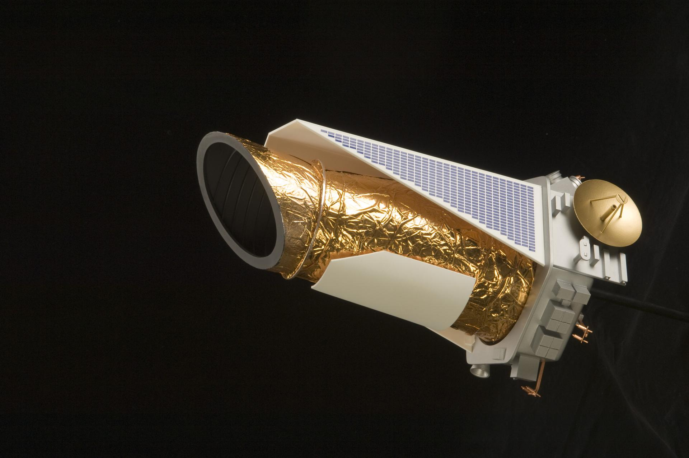
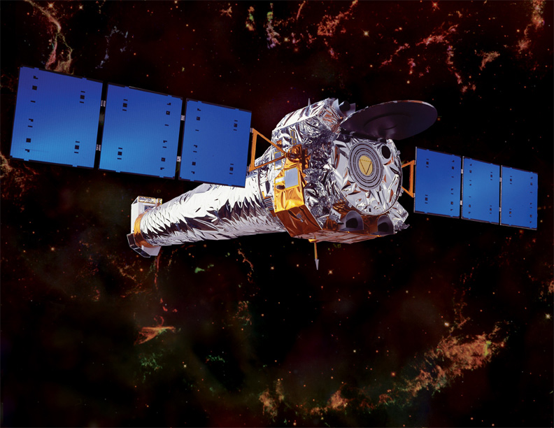
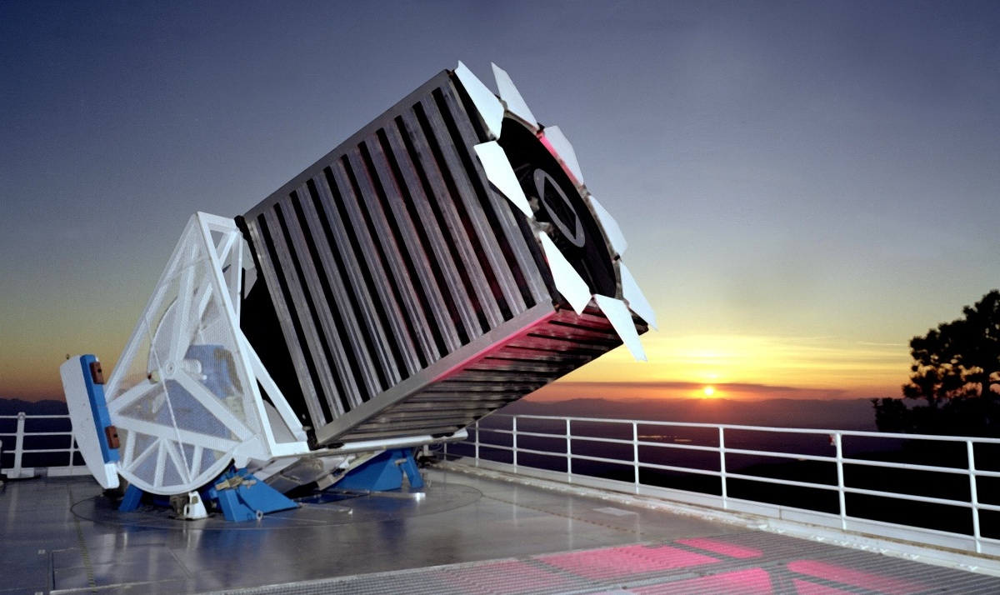
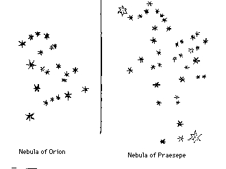

What is star?
A star is essentially a gigantic sphere of hot gas held together by its own gravity. At its core, nuclear fusion reactions occur, combining hydrogen atoms to form helium and releasing an enormous amount of energy in the process. This energy radiates outward, producing the light and heat that we observe.
Why is it essential to learn about stars?
Learning about stars is crucial for understanding the fundamental processes that govern the universe. Stars are essentially cosmic laboratories where we can study the effects of extreme temperatures, pressures, and nuclear reactions. These stellar processes, including nuclear fusion, are responsible for creating and distributing elements throughout the universe. By studying stars, we gain insights into how they form, evolve, and eventually die, which helps us understand the broader structure and history of the cosmos. This knowledge extends to the formation and evolution of galaxies, as stars play a pivotal role in shaping galactic structures and their dynamics. Understanding these cosmic processes provides a foundational framework for comprehending the universe's past, present, and future.
Stars are the primary sources of most of the elements found in the universe. Through nuclear fusion, stars create elements such as carbon, oxygen, and iron, which are essential for the formation of planets and life as we know it. When stars explode in supernovae, they distribute these elements into the interstellar medium, enriching the galaxy and contributing to the formation of new stars and planetary systems. By studying stars and their life cycles, we can trace the origins of these crucial elements and understand their distribution throughout the universe. This knowledge is not only important for understanding the conditions that led to the formation of Earth and other planets but also for the ongoing search for extraterrestrial life.
Our Sun, a typical star, plays a critical role in sustaining life on Earth. Understanding solar behavior helps us predict and mitigate the effects of space weather, which can impact technology and infrastructure on our planet. Solar activity, such as solar flares and coronal mass ejections, can affect satellite communications, power grids, and even weather patterns. Additionally, the study of stars drives advancements in observational technologies and techniques, which have broader applications beyond astronomy. Innovations developed for stellar research often find uses in other scientific fields, leading to technological progress and improved tools for exploring the universe. In essence, studying stars not only enriches our knowledge of the cosmos but also has practical implications for our daily lives and technological development.
How do Stars form?
Stars form through a complex and fascinating process that begins in the vast, cold regions of space and leads to the creation of some of the most fundamental objects in the universe.
Molecular Clouds
The process of star formation starts in molecular clouds, which are large, dense regions of gas and dust in space. These clouds, also known as stellar nurseries, can be hundreds of light-years across and are primarily composed of hydrogen molecules. The conditions in these clouds are cold and dense, making them the ideal environment for star formation.
Cloud Collapse
The formation of a star begins when a disturbance, such as a nearby supernova explosion or interactions with other molecular clouds, triggers the collapse of a region within the cloud. Gravity pulls the gas and dust together, causing the region to contract and increase in density and temperature. As the collapse continues, the material gathers in a central core.
Protostar Formation
As the central core of the collapsing cloud becomes increasingly dense, it heats up and forms a protostar. A protostar is a hot, dense object that has not yet reached the temperatures necessary for nuclear fusion to occur. During this phase, the protostar is often surrounded by a rotating disk of gas and dust, which may eventually form planets, moons, and other celestial objects.
Accretion and Disk Formation
The protostar continues to accumulate material from the surrounding disk, increasing its mass and temperature. The infall of material from the disk onto the protostar can cause powerful outflows and jets of gas to be ejected along the poles of the protostar. This accretion process helps to regulate the star's growth and can affect the formation of planetary systems.
Ignition of Nuclear Fusion
Once the protostar's core temperature reaches around 10 million Kelvin, nuclear fusion reactions begin. This is the point at which hydrogen atoms start to fuse into helium, releasing a tremendous amount of energy. The onset of nuclear fusion marks the transition from a protostar to a main-sequence star. The energy produced by fusion creates an outward pressure that balances the inward pull of gravity, stabilizing the star.
Main Sequence Phase
A star enters the main sequence phase of its life cycle when it achieves a stable state of nuclear fusion in its core. During this time, the star steadily fuses hydrogen into helium, producing energy that powers the star and emits light. The main sequence phase is the longest and most stable part of a star's life and can last billions of years, depending on the star's mass.
Stellar Evolution
As a star exhausts the hydrogen fuel in its core, it will undergo various evolutionary stages depending on its mass. Low-mass stars, like the Sun, will expand into red giants and eventually shed their outer layers to form a white dwarf. Massive stars will go through more dramatic changes, potentially ending their lives in supernova explosions and leaving behind neutron stars or black holes.
Characteristics of Stars
Stars are remarkable celestial objects with a range of distinct characteristics that define their nature and behavior. Understanding these characteristics provides valuable insights into their life cycles, the structure of the universe, and the origins of elements essential for life.
Stars are primarily composed of hydrogen and helium, the two lightest and most abundant elements in the universe. Through nuclear fusion, stars convert these elements into heavier elements, such as carbon, oxygen, and iron, over their lifetimes. The process of fusion occurs in the core of the star, where temperatures and pressures are extremely high. This fusion process releases energy, which powers the star and produces light and heat.
The surface temperature of a star determines its color, which ranges from blue and white to yellow, orange, and red. Hotter stars, with surface temperatures exceeding 30,000 Kelvin, appear blue or white, while cooler stars, with temperatures below 3,000 Kelvin, appear red. The color of a star provides crucial information about its temperature and helps astronomers classify stars into different spectral types, such as O, B, A, F, G, K, and M.
A star’s brightness as seen from Earth is known as its apparent magnitude, which can be influenced by its distance from Earth and its intrinsic luminosity. Luminosity refers to the total amount of energy a star emits per unit of time, regardless of its distance from an observer. Luminosity is a measure of a star's true brightness and is influenced by its size, temperature, and stage in its life cycle.
Stars vary significantly in size and mass. They can range from neutron stars, with masses about 1.4 times that of the Sun but with radii of only 10-15 kilometers, to supergiants, which can be hundreds to over a thousand times the radius of the Sun. The mass of a star affects its life cycle, including its rate of nuclear fusion and its eventual fate, whether it becomes a white dwarf, neutron star, or black hole.
Stars undergo a complex life cycle that depends on their mass. Massive stars burn through their fuel more quickly and may end their lives in supernova explosions, leaving behind neutron stars or black holes. Less massive stars, like the Sun, go through a red giant phase before shedding their outer layers and leaving behind a white dwarf. The study of a star's life cycle provides insights into the formation and evolution of galaxies and planetary systems.
Many stars exhibit magnetic activity, including sunspots, solar flares, and coronal mass ejections. These magnetic phenomena are related to the star's rotation and magnetic field and can influence space weather and stellar atmospheres. Observing magnetic activity helps astronomers understand the dynamic processes occurring within stars and their impact on their surroundings.
Types of Stars
Stars are classified into several types based on their life stages and characteristics. Main sequence stars, like our Sun, are in their prime, fusing hydrogen into helium. They vary in color and temperature, ranging from hot blue O-type stars to cooler red M-type stars.
As they age, these stars expand into red giants, which are larger and cooler, giving them a reddish hue. After shedding their outer layers, they become white dwarfs, dense remnants that gradually cool over time.
For more massive stars, the end stage can be a neutron star, incredibly dense with a strong gravitational pull. The most massive stars can collapse into black holes, regions of space with gravity so intense that not even light can escape. Each type of star reveals different aspects of stellar evolution and cosmic structure.
Main Sequence Stars
Main sequence stars are the most common and longest-lasting type of stars in the universe. They are in a stable phase of their life cycle where they burn hydrogen into helium in their cores through nuclear fusion. This process releases a tremendous amount of energy, which provides the star's light and heat.
The characteristics of main sequence stars vary widely, influencing their color, temperature, and luminosity. They are categorized into different spectral types—O, B, A, F, G, K, and M—based on their surface temperatures and colors. O-type stars are the hottest and bluest, with temperatures exceeding 30,000 Kelvin, while M-type stars are the coolest and reddest, with temperatures below 3,500 Kelvin. The Sun is a G-type main sequence star, often referred to as a G dwarf.
The mass of a main sequence star is crucial in determining its characteristics and lifespan. More massive stars are hotter and burn their fuel more rapidly, resulting in shorter lifespans compared to less massive stars. For instance, an O-type star might only last a few million years, while an M-type star can exist for tens of billions of years.
Main sequence stars also exhibit a balance between gravitational forces pulling inward and the radiation pressure pushing outward. This equilibrium maintains the star's stability over long periods. As a star exhausts its hydrogen fuel, it will eventually leave the main sequence phase, leading to changes in its structure and energy output.
Studying main sequence stars is fundamental to understanding stellar evolution and the life cycle of stars. They serve as a benchmark for comparing other types of stars and provide insight into the processes that drive the formation and development of galaxies.
Red Giants
Red giants are a fascinating phase in the life cycle of stars, representing a significant transformation from their main sequence stage. As stars like the Sun exhaust their hydrogen fuel in the core, they undergo dramatic changes, leading to the red giant phase. This phase is characterized by the expansion of the star's outer layers and a cooling of the star's surface, giving it a reddish appearance.
During the red giant phase, the core of the star contracts under gravity, increasing in temperature and pressure. This contraction triggers the fusion of helium into heavier elements, such as carbon and oxygen. Meanwhile, the outer layers of the star expand enormously, sometimes to a size that engulfs the inner planets of the star system. Despite this expansion, the surface temperature decreases, giving the star its characteristic red color.
The size of a red giant can vary significantly, with some reaching diameters hundreds of times greater than that of the Sun. The star’s luminosity increases substantially during this phase, making red giants some of the brightest objects in the night sky. However, their core fusion processes are relatively short-lived compared to their main sequence lifetimes.
Red giants eventually shed their outer layers, creating a planetary nebula, and leave behind a hot, dense core known as a white dwarf. This transition marks the end of the red giant phase. The material expelled into space enriches the interstellar medium with heavy elements, contributing to the formation of new stars and planetary systems.
Understanding red giants is crucial for comprehending the final stages of stellar evolution and the role of stars in cosmic chemical enrichment. Their study provides insights into the future of our own Sun and the evolutionary paths of stars of similar mass.
White Dwarfs
White dwarfs are the remnants of medium- to low-mass stars that have exhausted their nuclear fuel. These stellar remnants are fascinating objects in their own right, representing a key stage in the lifecycle of stars like our Sun. After a star has completed its red giant phase and expelled its outer layers, the remaining core contracts into a white dwarf.
A white dwarf is an incredibly dense and compact object, typically about the size of Earth but with a mass comparable to that of the Sun. This immense density arises because the star's core is composed primarily of electron-degenerate matter, where electrons are packed closely together under extreme pressure. As a result, white dwarfs have extraordinarily high surface gravity.
White dwarfs no longer undergo fusion reactions; instead, they radiate away their residual heat over time. Their surface temperature can initially be quite high, but they gradually cool and dim over billions of years. This cooling process can eventually make a white dwarf faint and nearly invisible.
The composition of a white dwarf depends on the original mass of the star. For stars like the Sun, the core primarily consists of carbon and oxygen, while more massive stars might have white dwarfs with cores rich in heavier elements like neon or magnesium. The study of white dwarfs provides valuable insights into the later stages of stellar evolution, as well as the properties of degenerate matter.
White dwarfs play a crucial role in our understanding of stellar life cycles and the fate of stars similar to our Sun. They also contribute to our knowledge of cosmological phenomena, including the physics of degenerate matter and the dynamics of binary star systems where white dwarfs can interact with companion stars.
Neutron Stars
Neutron stars are one of the most extreme and fascinating objects in the universe, formed from the remnants of massive stars that have undergone a supernova explosion. These stellar remnants are incredibly dense, resulting from the collapse of the core of a massive star after it has exhausted its nuclear fuel.
Neutron stars are primarily composed of neutrons packed together in a very small volume, often only about 10 to 20 kilometers in diameter. Despite their small size, neutron stars contain roughly 1.4 times the mass of the Sun, making them incredibly dense. This extreme density causes the gravitational pull at their surface to be about 2 billion times stronger than Earth's gravity.
The core collapse during a supernova compresses the star's protons and electrons together to form neutrons, resulting in a neutron star. The matter inside a neutron star is thought to be in a state called neutron degeneracy, where the neutrons are packed so tightly that they resist further compression.
Neutron stars exhibit some of the strongest magnetic fields in the universe, which can be up to a trillion times stronger than Earth's magnetic field. They also rotate at incredibly high speeds, with some neutron stars, known as pulsars, spinning several hundred times per second. The rapid rotation and intense magnetic fields cause these stars to emit beams of electromagnetic radiation from their poles, which, if aligned with Earth, can be detected as regular pulses of radio waves or other forms of radiation.
The study of neutron stars provides valuable insights into the fundamental properties of matter under extreme conditions, the behavior of matter at nuclear densities, and the dynamics of supernova explosions. Neutron stars also play a significant role in astrophysical processes such as the creation of heavy elements through neutron capture and the understanding of gravitational waves generated by neutron star mergers.
Black Holes
Black holes are one of the most enigmatic and intriguing phenomena in the universe. They are regions in space where the gravitational pull is so strong that nothing, not even light, can escape from them. Black holes are formed from the remnants of massive stars that have collapsed under their own gravity after exhausting their nuclear fuel. This collapse leads to a singularity, a point of infinite density, surrounded by an event horizon, beyond which nothing can escape.
The defining feature of a black hole is its event horizon, the boundary around the singularity from which nothing can escape. The event horizon marks the point where the escape velocity equals the speed of light. Anything crossing this boundary is inevitably drawn into the singularity at the center. The size of the event horizon is proportional to the black hole’s mass, and it is referred to as the Schwarzschild radius.
Black holes are categorized into different types based on their mass. Stellar black holes, which are formed from the remnants of massive stars, typically have masses ranging from about 3 to 10 times that of the Sun. Supermassive black holes, found at the centers of galaxies, can have masses ranging from hundreds of thousands to billions of solar masses. Intermediate-mass black holes, with masses between stellar and supermassive black holes, are less understood and more challenging to detect. Micro black holes are hypothetical small black holes with masses much less than that of the Sun, predicted by some theories but not yet observed.
Despite their invisible nature, black holes can be detected through their interactions with surrounding matter. When a black hole pulls in material from a companion star or surrounding accretion disk, the matter heats up and emits X-rays and other radiation, which can be detected by telescopes. Additionally, black holes can influence the motion of nearby stars and gas, providing indirect evidence of their presence.
Studying black holes is crucial for understanding fundamental aspects of physics, including the nature of gravity, the behavior of matter and energy in extreme conditions, and the structure of spacetime itself. Black holes also play a key role in astrophysical processes such as galaxy formation and the evolution of galaxies, making them central to our understanding of the universe.
Explorations and Missions
Hubble Space Telescope (1990 - present)
Launched in 1990, the Hubble Space Telescope has revolutionized our understanding of stars and galaxies. Hubble's observations have provided detailed images of stellar phenomena such as star clusters, nebulae, and supernova remnants. Its data has been crucial in determining the rate of expansion of the universe and the nature of dark energy. The telescope has also observed the life cycles of stars, including the formation of new stars in nebulae and the death of massive stars in supernova explosions.

Kepler Space Telescope
The Kepler Space Telescope was designed to discover Earth-sized planets orbiting other stars, but it also made significant contributions to stellar science. By monitoring the brightness of stars, Kepler identified thousands of exoplanets and provided insights into stellar variability, including the study of pulsating stars known as variable stars. The data collected by Kepler has helped scientists understand stellar evolution and the frequency of different types of stars in the galaxy.
Chandra X-ray Observatory (1999 - Present)
Chandra, an X-ray observatory, has provided valuable information about high-energy processes in stars and their environments. It has studied the remnants of supernova explosions, the accretion disks around black holes, and the hot gas in the clusters of galaxies. Chandra’s observations have enhanced our understanding of the life cycle of massive stars and the extreme conditions under which they operate.
Sloan Digital Sky Survey (2000 - Present)
The Sloan Digital Sky Survey (SDSS) has mapped a large portion of the sky in multiple wavelengths, providing detailed information on millions of stars. SDSS data has been instrumental in studying the distribution of stars in the galaxy, the structure of the Milky Way, and the properties of stellar populations. The survey has also contributed to our understanding of stellar dynamics and the evolution of the galaxy.
Galileo's Observations (1609 - 1610)
Although not a space mission, Galileo Galilei's early observations of stars through a telescope marked a significant milestone in astronomy. His observations of Jupiter's moons, the phases of Venus, and the Milky Way’s structure laid the groundwork for modern stellar astronomy. Galileo’s work helped establish the heliocentric model of the solar system and provided early evidence of the vast number of stars in the universe.
Facts about Stars
Many stars in our galaxy are not solitary but exist in multiple-star systems. For example, Alpha Centauri, the closest star system to Earth, is a triple star system consisting of Alpha Centauri A, Alpha Centauri B, and Proxima Centauri. Studying these star systems helps scientists understand the formation and evolution of stars and planetary systems.
Just like our Sun, other stars can have spots, known as starspots, which are cooler and darker regions on their surfaces. These starspots are caused by the star's magnetic activity, similar to sunspots. Observing starspots on other stars can provide insights into their magnetic fields and stellar activity.
Pulsars are a type of neutron star that emits beams of electromagnetic radiation from its magnetic poles. As the star spins, these beams sweep across the sky like a lighthouse, creating regular pulses of radiation. Pulsars can be incredibly precise timekeepers, and studying them has led to discoveries in gravitational physics and the behavior of matter at extreme densities.
The Hertzsprung-Russell (H-R) diagram is a crucial tool in stellar astrophysics that plots stars according to their luminosity (or absolute magnitude) and their surface temperature. This diagram reveals the relationship between different types of stars and their life stages, helping astronomers understand stellar evolution and the life cycles of stars.
Rogue stars are stars that do not belong to any galaxy or stellar system. These stars are ejected from their home galaxies due to gravitational interactions or collisions with other stars. Finding and studying these rogue stars can provide valuable information about galactic dynamics and the history of stellar interactions.
Quiz
1. How did the Hubble Deep Field observation in 1995 change our understanding of the universe?
2. Describe one contribution of ancient Babylonians to early astronomy.
3. Explain the impact of the Islamic Golden Age on the development of astronomy during the medieval period.
4. How did the heliocentric model proposed by Copernicus revolutionize our understanding of the solar system?
5. What are some of the key research areas in contemporary astronomy, and why are they significant?